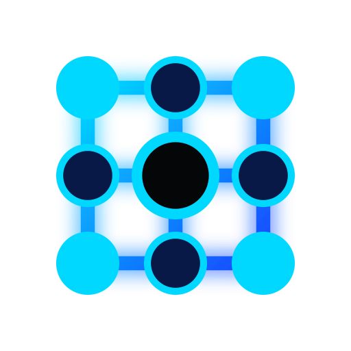

Marketing sem receita
Muita atividade, pouca leitura de impacto real no negócio.
Marketing, vendas e tecnologia operando sobre a mesma prioridade para transformar gargalos em crescimento mensurável, previsível e recorrente.
Estratégia · Execução · Recorrência
Role para explorar ↓
01 / SOBRE
Crescimento deixa de ser intenção quando estratégia, processo, dados e rotina passam a operar juntos.
Crescimento não é campanha.
É operação.
O que a Valen faz
A Valen entra no ponto em que a operação está fragmentada, encontra o gargalo que limita receita e organiza marketing, vendas, tecnologia, processos e dados em torno de uma prioridade clara.
02 / O PROBLEMA
Antes de escolher ferramenta, campanha ou canal, localizamos o ponto do sistema que está travando o crescimento agora.
Muita atividade, pouca leitura de impacto real no negócio.
Resultado depende de esforço individual, memória e improviso.

Ferramentas existem, mas não reduzem atrito nem aceleram decisão.
Os números estão disponíveis, mas não definem prioridade.
03 / MÉTODO
Da prioridade à escala
Mapear jornada, funil, operação, dados, capacidade e restrições. Separar sintoma de causa.
Definir uma prioridade principal com impacto, evidência, esforço e tempo claramente avaliados.
Desenhar, implementar e operar processos, campanhas, automações, ativos e cadências.
Conectar atividade, desempenho, negócio e decisão em um ritmo de gestão compreensível.
Transformar o que funcionou em padrão, capacidade, economia saudável e recorrência.
04 / SOLUÇÕES
A solução entra depois do diagnóstico. Cada frente existe para remover um gargalo específico — não para aumentar a lista de entregas.
AQUISIÇÃO
Posicionamento, oferta, campanhas, criativos, páginas e funis construídos para gerar demanda que o comercial consegue trabalhar.
CONVERSÃO
Pipeline, qualificação, cadência, follow-up e gestão para transformar atenção em receita e aprendizado operacional.
TECNOLOGIA & OPERAÇÕES
Dados, integrações, automações e dashboards para reduzir atrito, aumentar visibilidade e acelerar a tomada de decisão.
Entrar pelo gargalo.
Provar valor.
Expandir com coerência.
05 / PRINCÍPIOS
Negócio antes da ferramenta.
↗Prioridade antes de volume.
↗Execução é a prova da estratégia.
↗Métrica existe para orientar decisão.
↗06 / CARREIRAS
Pessoas que executam
Buscamos gente que pensa negócio antes da ferramenta, trata execução com responsabilidade e transforma problema em próxima ação.
Apresentar meu trabalho ↗07 / PRÓXIMA AÇÃO
Conte onde sua empresa está agora. A conversa começa pelo problema que mais importa — e pelo que pode ser medido.
Solicitar diagnóstico↗